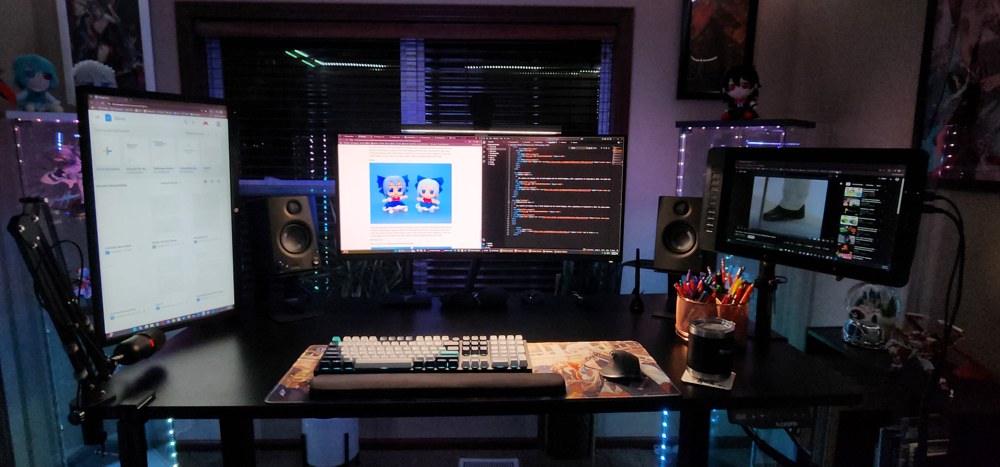
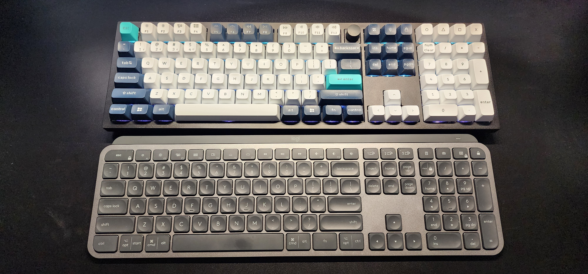
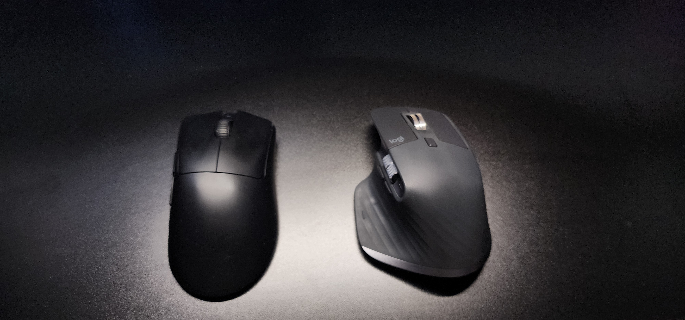
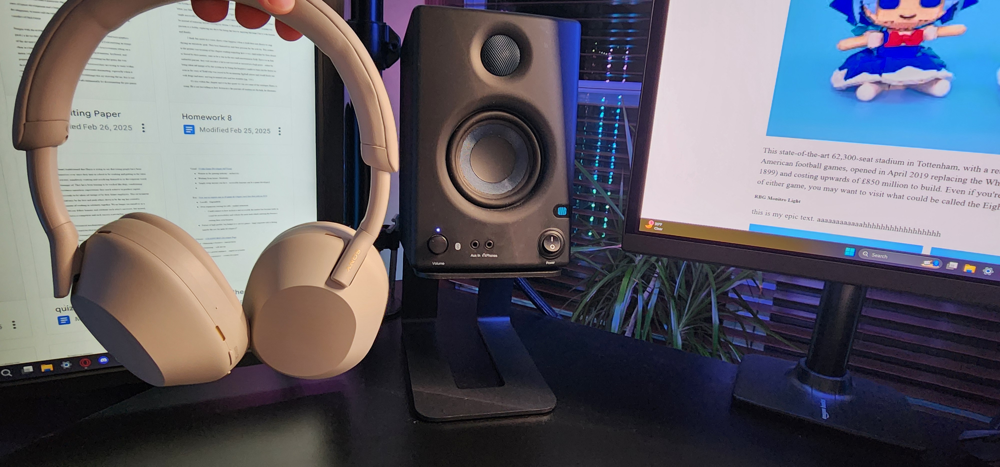
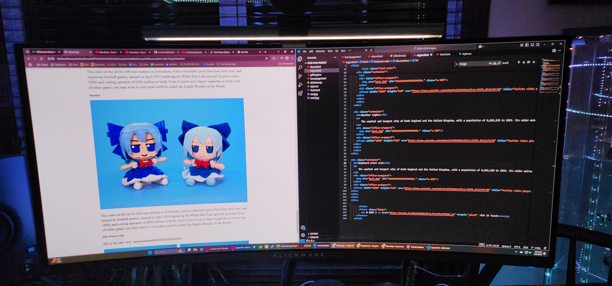
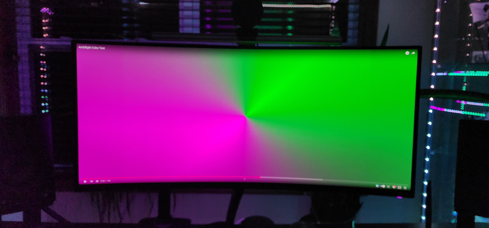

The Setup

My office setup has evolved over time to encompass using technology needed for first school, then school and work, then school, work, and gaming. Everything within it needs to be able to do each task individually fine. Fortunately, most gaining tech doubles as great productive tech, with minor exceptions (as seen in my mouse choices).
Computer

Every gamer needs his gaming PC and I am no different. Using the money I got from working at the funeral parlor, I was an office administrator by day, and PC builder by night. Did I know what I was doing? No. I knew next to nothing about computer hardware before starting, however, that is exactly why I wanted to build my own computer. It was a great learning experience for computers. With a budget of about 2k, I built my dream computer ideal for ultrawide 2k gaming at high refresh rates (or in normal people terms, very very fast computers with pretty graphics).
Graphics Card
NVIDIA GeForce RTX 4070 Ti
CPU
Intel Core i7-13700K
RAM
G.Skill Ripjaws S5 32GB (2 x 16GB) DDR5-6000
Storage
2 x WD Black 2 TB
Cooler + Fans
DeepCool AK500 ZERO DARK + 2 x Lian Li UNI Fan SL Infinity Fluid Dynamic Bearing 120mm Case Fan
PSU
EVGA SuperNOVA 750 GT 750 Watt 80 Plus Gold
Mootherboard
ASUS Z790-P PRIME
Case
Black Fractal North
Table

Keyboard

For keyboards, I utilize two different kinds of keyboards. The first is my Keychron Q6 Max keyboard I use for home. I specially use red switches for a nice and quiet mechanical feel. However, it's HEAVY. It is a metal frame making it a whopping 5 lbs! For this reason, I use a different keyboard for when I need to take a keyboard to the office. For that I use my Logitech MX keys. It is a very light and linear keyboard that allows for seamless computer switching, unlike how my Keychron requires me to press my computer swapping button.
Mice

For mice I have my daily driver being my Logitech MX Master 3S. It allows for seamless computer switching and is what I use to bring to school and work when I am working. However, it is not the lightest mouse at 141g, which is why I use my Razer Viper V3 HyperSpeed, which is a LIGHT at about half the weight, being 82 g, making it ideal for gaming
Speakers and Headphones

For speakers I use PreSonus Eris 3.5 3.5-inch studio monitor speakers. These speakers are great budget options for audio mixing, lending well to my music production and video editing needs. However, when I need to jam or block out the sounds of construction outside my window I can always rely on my trusty WH-1000XM5 headphones to block out the noise and provide superb audio quality. Especially when combined with my Fx Sounds equalizer allowing me to properly EQ each device to my preference, instead of relying on standard audio drivers.
Monitor

This is my most recent toy I love dearly. It is my Alineware AW3423DWF monitor. It is not only an OLED monitor, but a 34-inch ultrawide one at that with great HDR, allowing for up to 1k nits of brightness. Additionally, it allows for 165 hz and a 0.1 ms response time, making it AMAZING for gaming and image editing.
RBG Monitor Light


Hooked to my monitor I have a fun RGB light setup using Govee technology. Essentially, my computer changes the colors of the backlight RGB lights of my monitor to match what is displaying on my screen, allowing for an immersive gaming and video watching experience.